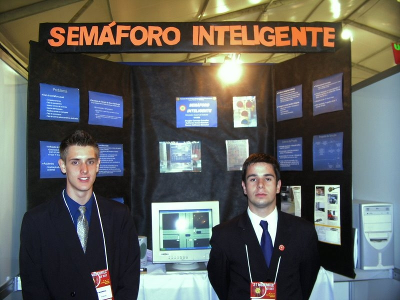

2006
O início: tecnologia, informática e a primeira vez ensinando
Formação
Desenvolvimento em C++ - Fundação Liberato
Ensino Médio - Tive meu primeiro contato estruturado com programação e tecnologia.
Cursos de Informática - SUPREMA
Lógica de programação
HTML
Flash
FrontPage
Visual Basic
Photoshop
Montagem e manutenção de PCs
e muitos outros

MOSTRATEC - Expositor
Projeto "Semáforo Inteligente".
Aqui nasceu uma característica que me acompanha em toda a trajetória: aprender, aplicar e compartilhar conhecimento.